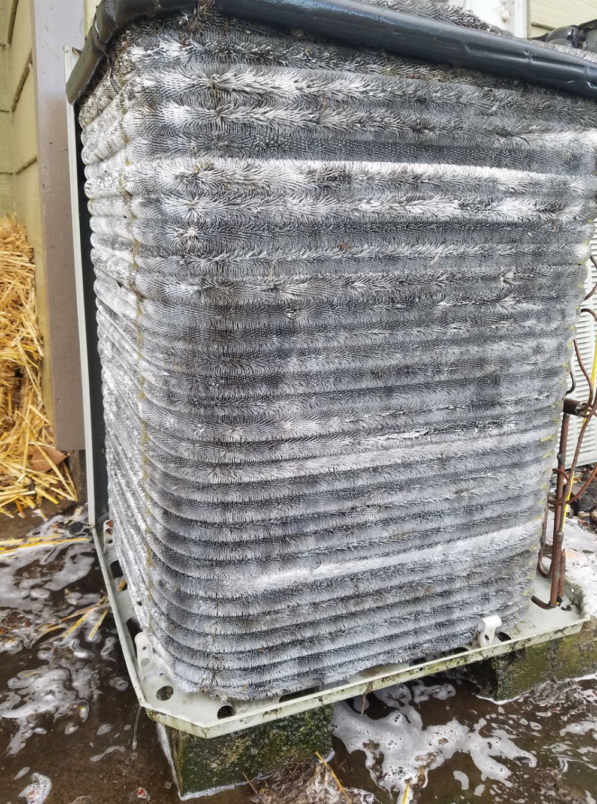

If we could fix one habit in every household in the Walla Walla Valley, it wouldn't be nest thermostats or smart humidifiers. It'd be the furnace filter.
Nine times out of ten, when a homeowner calls us about a furnace that "just doesn't feel as warm," or an AC that "ices up," or a heat pump that "short-cycles," the first thing we check is the filter. And the first thing we usually find is a filter so loaded with dust and pet hair you could plant tomatoes in it.
1. What a dirty filter really does
A clean filter has a static pressure drop of about 0.1–0.15 inches of water column across it. A filter clogged with six months of Walla Walla pollen and house dust can hit 0.5–0.8 inches — four to eight times the restriction. Here's what that means in practice:
- The blower works harder. ECM blowers ramp up amperage to hit target airflow. PSC blowers just fail to hit it. Either way, your motor's working overtime.
- Heat exchanger runs hotter. With less airflow, the heat exchanger temperature climbs. Over years, this thermal cycling stresses the metal and leads to cracks.
- AC coil freezes. Less airflow across the evaporator coil drops the coil temperature below 32°F and it ices up. Now you're paying for no cooling and stressing the compressor.
- Efficiency plummets. A system with a choked filter can lose 15–25% of its rated efficiency.
Mistake #1: MERV too high
HVAC filter packaging has gotten aggressive — "MERV 13! Allergen-blocking!! Hospital-grade!!!" Great, except residential systems weren't designed for MERV 13. High-MERV filters have much higher pressure drops, and stuffing one into a residential blower is like strapping a grocery bag over your mouth and trying to run a marathon.
For a standard 1-inch filter slot, MERV 8 or MERV 11 is the sweet spot. You get meaningful filtration without starving the blower. If you genuinely need higher filtration — severe allergies, wildfire smoke seasons like we get in the Valley — upgrade to a 4-inch or 5-inch media cabinet. Deeper pleats, more filter area, much lower pressure drop. We install them for about $450–$600 including the cabinet and duct transitions.

Mistake #2: Changing too rarely
"Change every 90 days" is on the filter packaging for a reason — but it's the maximum, not the target. Real-world in a Valley home:
- One pet, no smokers, city air: Every 60 days for a 1-inch filter.
- Multiple pets, dusty environment, rural home: Every 30–45 days.
- Harvest / wildfire season (Aug–Oct): Check every 2 weeks. Dust from combines and ag burn-offs coats filters fast.
- 4–5 inch media filter: Every 6–12 months, but check quarterly.
Set a recurring reminder on your phone. It's a four-dollar habit that saves you a four-figure repair. — American Air maintenance playbook
The right replacement schedule
The simple test: pull your filter every 30 days for the first three months. Hold it up to a light bulb. If you can't see light through the bulk of the pleats, change it. After a few cycles you'll know your house's rhythm and can settle into a schedule.
Pleated vs fiberglass vs media
Fiberglass (blue/green, $2–4 each): Cheap, catches the big stuff, fine for a rarely-used vacation property. Almost useless for allergies.
Pleated 1-inch (MERV 8–13, $10–20 each): The standard. MERV 8 or 11 is correct for most residential systems.
Media cabinet 4–5 inch (MERV 11–16, $60–90 each, lasts 6–12 months): The gold standard for Valley homes. If we're ever asked "what should I install once and forget about," this is the answer.
Electronic / electrostatic: Cool in theory, high maintenance in practice. We'll install them on request but don't actively recommend them.
Valley-specific pollen notes
Walla Walla springs are rough on filters. Locust, juniper, grass pollen, and cottonwood seed come through in waves from April through early July. If you or anyone in your house has seasonal allergies, this is the season to upgrade to a 4-inch media or check the 1-inch filter every two weeks.
Harvest season and the occasional wildfire smoke intrusion from Oregon or the Cascade foothills add another pollen-like load in August and September. Same advice.